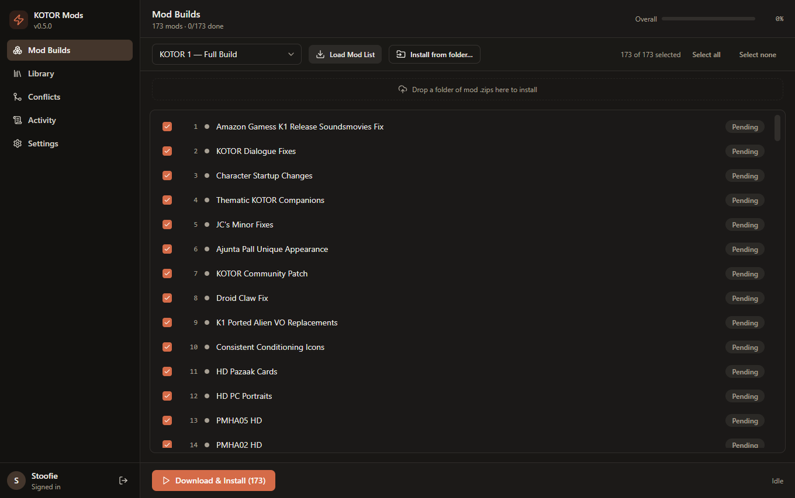
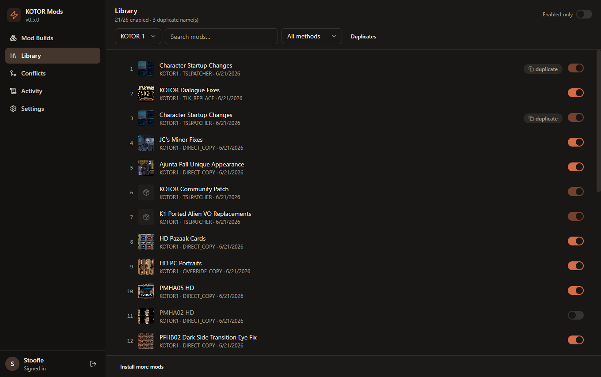
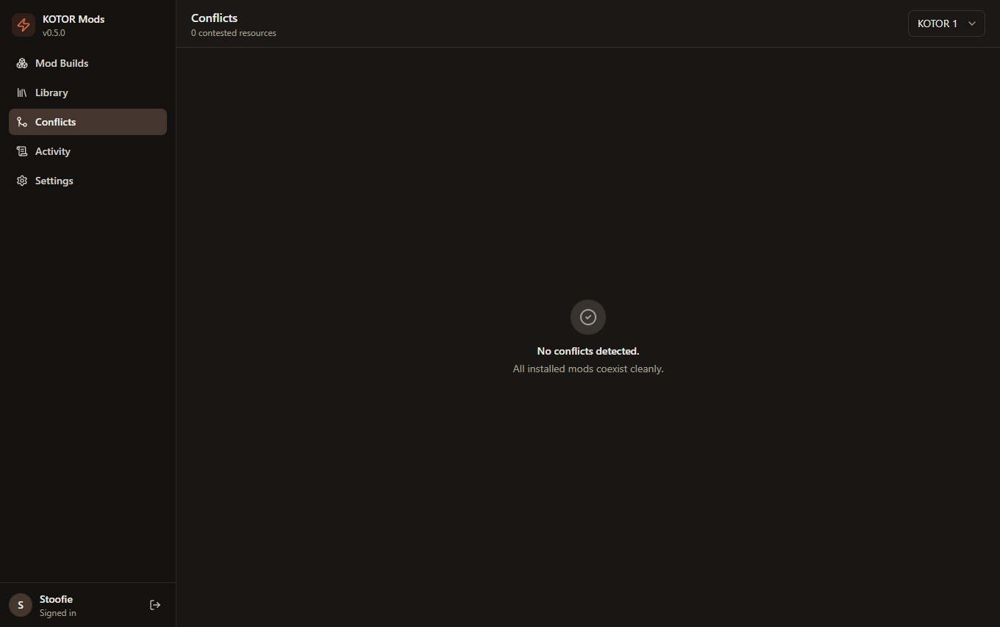
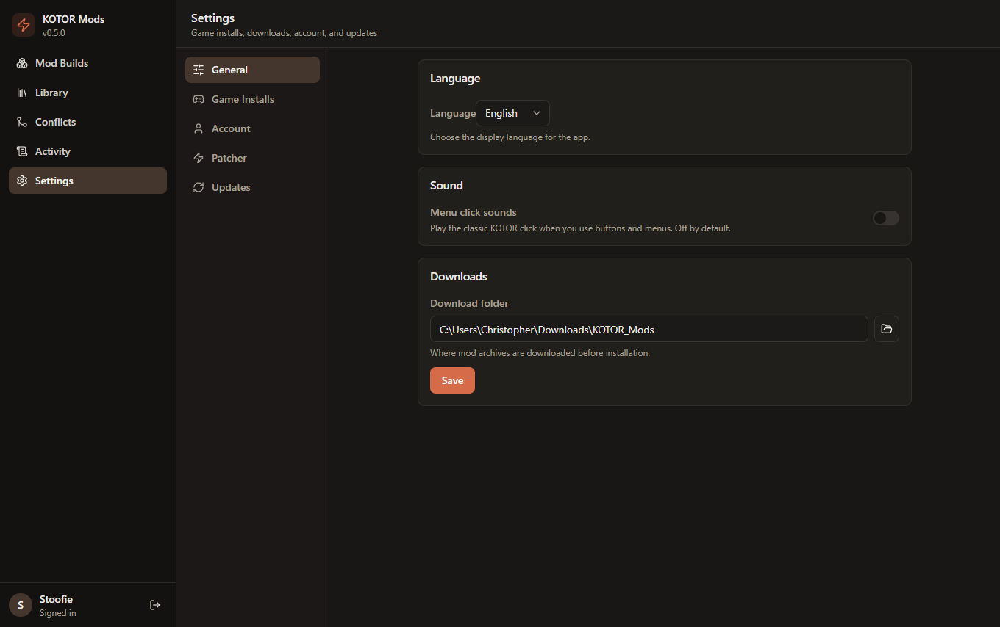
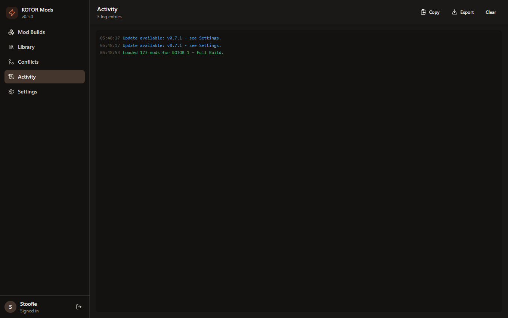
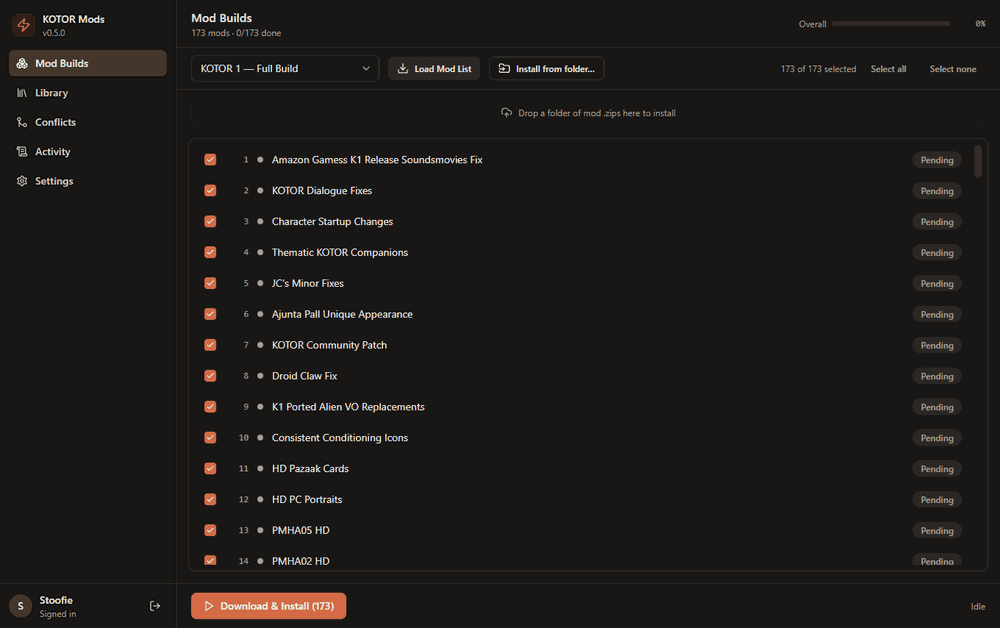
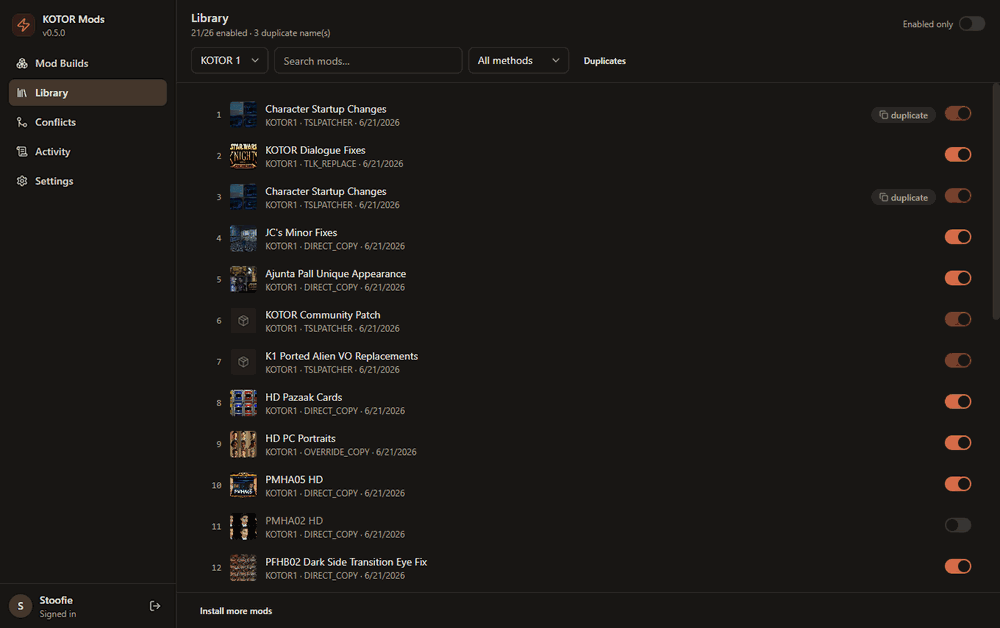
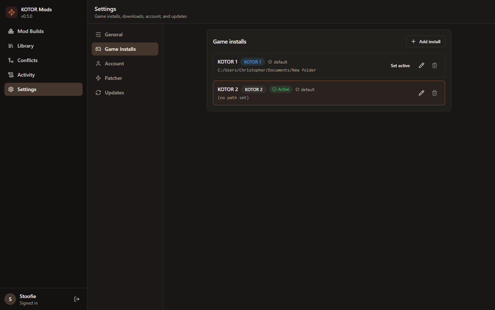

A one-click downloader, installer, and full mod manager for Star Wars: Knights of the Old Republic 1 & 2. It follows the recommended community build, installs TSLPatcher mods headlessly, and lets you enable, disable, and resolve conflicts - all from a single app.
One self-contained .exe · no Python/Node/installer needed · auto-update check
A clean, Claude-desktop-style interface with a sidebar for each part of the workflow. Click any screenshot to enlarge it.





A quick tour through the main screens, and searching the mod library.

Touring Mod Builds, Library, Conflicts, and Settings.

Searching and filtering your installed mods.
From download to a fully-modded game in four steps.
Grab KOTOR-Mod-Installer.exe from the
latest release
and run it - that's the whole app, one file. On first launch, open
Settings → Game Installs and point it at your
KOTOR 1 / KOTOR 2 install folders, then sign in to your
DeadlyStream account.

Go to Mod Builds, choose a curated build (e.g. KOTOR 1 - Full Build), and click Load Mod List then Download & Install All. Mods download and install in the recommended order, with live progress. TSLPatcher mods are applied headlessly - no clicking through each patcher.
The Library tracks every installed mod. Flip a switch to enable or disable a mod (its files move in and out of the game), see the install method, and import any mod archive you like - not just the curated ones.
The Conflicts view flags when two mods touch the same file file overlap or when a mod's own readme says it's incompatible with another declared - so you can fix load order or disable the loser before it breaks your game.
Everything you need to mod KOTOR end-to-end.
Downloads the recommended community mod list in the correct install order.
A bundled HoloPatcher engine applies TSLPatcher mods with no per-mod clicking.
Toggle loose-file mods on and off; the manager moves their files for you.
Finds file overlaps and declared incompatibilities across your enabled mods.
Point it at any archive or folder - it detects the install type and tracks it.
Checks GitHub for new releases and tells you when an update is available.